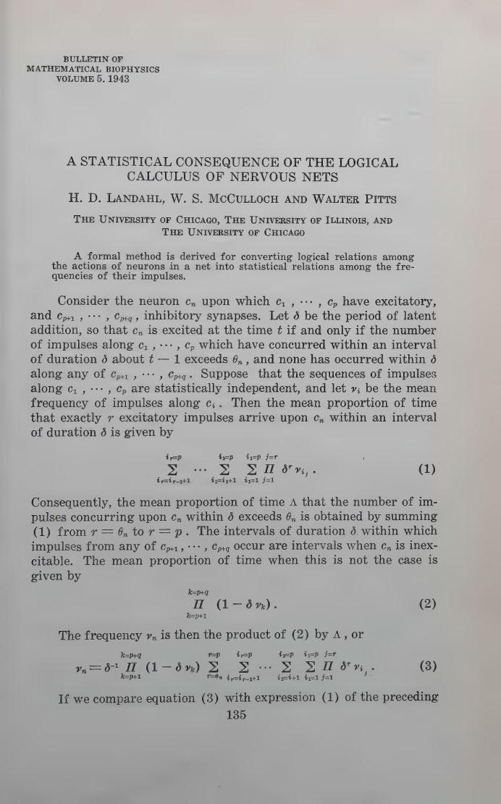
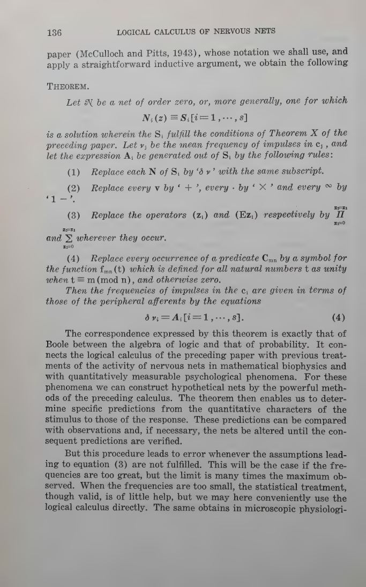
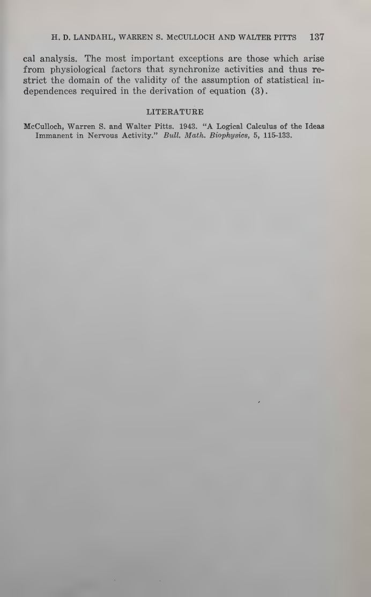

Bulletin of Mathematical Biophysics · Vol. 5 · 1943
A Statistical Consequence of the Logical Calculus of Nervous Nets
H. D. Landahl, Warren S. McCulloch, and Walter Pitts take the Boolean skeleton of the 1943 calculus and give it a body of frequencies. If impulses are independent, truth values become probabilities — and a logic of neurons becomes a statistics of nervous activity.
Read the plateThe bridge
Boolean algebra was already a probability calculus wearing logical clothes.
The 1943 calculus says that a neuron fires when a logical condition on its inputs is satisfied. The statistical note asks the obvious next question: what if the inputs do not fire deterministically, but as independent trains with mean frequencies? The logical condition does not disappear. It becomes a formula for the output frequency.
The paper's theorem is a dictionary. Replace each action by the rate , disjunction by addition, conjunction by multiplication, negation by , universal quantification by a product, and existential quantification by a sum. The equations of the net become equations of probability.
Why it matters: this is the step from “the neuron computes AND” to “the neuron fires at a rate predicted by the input rates.” It makes the theory quantitative, measurable, and testable against electrophysiology.
Laboratory · logic becomes frequency
Change the gate. Watch the rate.
Three independent input trains fire with adjustable probabilities per coincidence window. The output neuron implements a logical function of A, B, and C. The predicted probability follows Boolean algebra in the form of products and sums; the observed rate is counted from the actual output spikes.
The Boole bridge, live
Each column is one coincidence window . A mark means an impulse in that window. The output row is the gate applied to the three input rows.
gateA ∧ B
predicted p(out)0.270
observed p(out)0.000
The theorem
One substitution, whole calculus.
The theorem is stated for nets whose solutions satisfy the conditions of Theorem X of the 1943 paper — the safe, constructible class. It is not a new logic. It is the old logic read as a calculus of expected values.
The coincidence term. With independent input trains, the chance that exactly excitatory impulses arrive in a window is a sum over all -element subsets. The neuron needs at least of them.
The output rate. The bracket is the chance that enough excitation arrives; the final product is the chance that no inhibitory impulse does. This is the paper's equation (3), cleaned up for modern eyes.
The fine print
The theorem has a temperature.
“The correspondence expressed by this theorem is exactly that of Boole between the algebra of logic and that of probability.”
“But this procedure leads to error whenever the assumptions leading to equation (3) are not fulfilled. This will be the case if the frequencies are too great.”
“The most important exceptions are those which arise from physiological factors that synchronize activities and thus restrict the domain of the validity of the assumption of statistical independences.”
“When the frequencies are too small, the statistical treatment, though valid, is of little help, but we may here conveniently use the logical calculus directly.”
The paper itself
Pages from 1943
click to enlarge



Why it matters
The moment the theory became measurable.
Before this note, the logical calculus could say what a net would do. After it, the theory could say how often. Frequencies are what electrodes record; they are also what muscles integrate and what behaviour averages. The bridge from proposition to rate is the bridge from an idealized net to a laboratory preparation.
The cost is independence. Real nervous systems synchronize, oscillate, and inhibit in ways that make the product rule false. The paper knows this and says so. The rest of McCulloch's work can be read as an attempt to keep the Boolean clarity while paying that cost.
Read next: a topology of value, where inhibition between closed circuits produces preferences that no single scale can order.